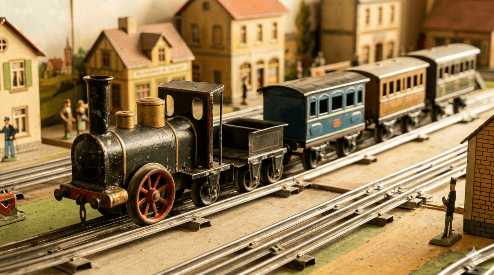

Predstavte si stroj, ktorý nebeží na baterky ani na elektrinu zo zásuvky. V jeho útrobách horí skutočný oheň, v malom kotli vrie voda a piesty syčia pod tlakom ostrej pary. Ak by ste ho v roku 1906 dali do rúk neopatrnému dieťaťu, v lepšom prípade by ste skončili s prepáleným kobercom, v horšom s vyhoreným domom. Dnes, v roku 2026, je tento mechanický dravec známy ako „Stork Leg“ (Bociania noha) a jeho cena vyráža dych: 250 000 dolárov.
Toto nie je len model lokomotívy. Je to oceľový starec, ktorý mal byť už dávno pretavený na nábojnice alebo skončiť v hrdzavej kope šrotu.

Keď hračky pľuli oheň
Na začiatku 20. storočia bol nemecký Märklin absolútnym vládcom technického sveta. Ich vlajková loď, model lokomotívy s označením „Stork Leg“, bola technickým zázrakom. Svoje meno dostala podľa obrovských, tenkých kolies, ktoré jej dodávali nevídanú eleganciu, ale aj krehkosť. Bol to symbol statusu – hračku poháňanú liehovým horákom si mohli dovoliť len rodiny priemyselných magnátov a šľachty.
Prežiť vlastnú smrť
Príbeh „Bocianej nohy“ je príbehom zázračného prežitia. Väčšina týchto strojov neprežila prvých desať rokov svojej existencie. Ak ich nezničila samotná para a oheň, prišla prvá svetová vojna. Kov bol vzácny a hračky boli to prvé, čo končilo v taviacich peciach, aby sa zmenili na zbrane.
Tých pár kusov, ktoré prežili, muselo prejsť cez ďalšie peklo – druhú svetovú vojnu, bombardovanie nemeckých miest a povojnovú chudobu, kedy sa staré hračky vyhadzovali ako zbytočné haraburdy.
Šťastie ukryté na povale
V roku 2026 je nájsť autentickú, nenatieranú „Bocianiu nohu“ v pôvodnom stave prakticky nemožné. Zberatelia po celom svete sledujú každú aukciu s lupou v ruke. Hľadajú stopy po pôvodnom cínovom spájkovaní a unikátnu patinu, ktorú nedokáže napodobniť žiadny reštaurátor.
Jeden z najznámejších kusov bol objavený takmer náhodou v pozostalosti na severe Anglicka. Stará pani netušila, že zaprášená krabica, ktorú chcela vyhodiť počas jarného upratovania, v sebe ukrýva mechanický svätý grál. Keď kladivko v aukčnej sieni dopadlo na stôl, suma sa zastavila na hranici štvrť milióna dolárov.
Prečo stojí 250 000 dolárov?
Nie je v tom zlato, diamanty ani moderná elektronika. Cena „Bocianej nohy“ je cenou za vzdor voči času. Je to hmatateľný dôkaz éry, kedy stroje mali dušu a vôňu spáleného liehu. V apríli 2026 sa hodnota tejto lokomotívy ustálila na 230 000 eurách, čo z nej robí jednu z najdrahších hračiek planéty.
„Stork Leg“ nám pripomína, že tie najvzácnejšie veci nie sú tie, ktoré sú vyrobené z drahých materiálov, ale tie, ktoré mali podľa všetkých pravidiel logiky prestať existovať, no napriek tomu tu stále sú – tiché, majestátne a neuveriteľne drahé.
Imagine a machine that runs neither on batteries nor electricity from a wall socket. Inside its belly, a real fire burns, water boils in a tiny boiler, and pistons hiss under the pressure of live steam. If you had placed it into the hands of a careless child back in 1906, you would have ended up with a scorched carpet at best, or a burned-down house at worst. Today, in 2026, this mechanical beast is known as the "Stork Leg," and its price tag is breathtaking: $250,000.
This is no ordinary model locomotive. It is a steel veteran that should have long since been melted down into bullet casings or ended up in a rusty scrap heap.
When Toys Spat Fire
At the beginning of the 20th century, the German manufacturer Märklin was the absolute ruler of the technical world. Their flagship model, a locomotive designated as the "Stork Leg," was a technical marvel. It earned its nickname from its massive, spindly wheels, which gave it unprecedented elegance but also fragility. It was a ultimate status symbol—only the families of industrial magnates and nobility could afford a toy powered by a live spirit burner.
Cheating Death
The story of the "Stork Leg" is a tale of miraculous survival. Most of these machines did not survive the first ten years of their existence. If they weren't destroyed by the steam and fire itself, World War I arrived. Metal was scarce, and toys were the first things to end up in smelting furnaces to be turned into weapons.
The few pieces that survived had to make it through another hell—World War II, the heavy bombing of German cities, and postwar poverty, a time when old toys were routinely thrown away as useless junk.
A Fortune Hidden in the Attic
In 2026, finding an authentic, unpainted "Stork Leg" in its original condition is practically impossible. Collectors around the globe follow every auction with a magnifying glass in hand, searching for traces of original tin soldering and that unique patina that no restorer can replicate.
One of the most famous pieces was discovered almost by accident in an estate in northern England. an elderly lady had no idea that the dusty box she wanted to throw out during spring cleaning hid a mechanical holy grail. When the gavel finally fell in the auction room, the price stopped at a staggering quarter of a million dollars.
Why Is It Worth $250,000?
There is no gold, no diamonds, and no modern electronics inside. The price of the "Stork Leg" is the price of defying time. It is tangible proof of an era when machines had a soul and smelled of burning spirit. In April 2026, the value of this locomotive stabilized at 230,000 euros, making it one of the most expensive toys on the planet.
The "Stork Leg" reminds us that the rarest things are not those made of precious materials, but those that, by all laws of logic, should have ceased to exist—yet against all odds, they are still here: silent, majestic, and incredibly valuable.
Stellen Sie sich eine Maschine vor, die weder mit Batterien noch mit Strom aus der Steckdose betrieben wird. In ihrem Inneren brennt ein echtes Feuer, in einem kleinen Kessel kocht Wasser und Kolben zischen unter dem Druck von heißem Dampf. Hätte man sie im Jahr 1906 in die Hände eines unvorsichtigen Kindes gegeben, wäre man im besten Fall mit einem verbrannten Teppich, im schlimmsten Fall mit einem abgebrannten Haus geendet. Heute, im Jahr 2026, ist dieses mechanische Prachtstück als „Storchenbein“ bekannt, und sein Preis verschlägt einem den Atem: 250.000 Dollar.
Dies ist nicht nur eine Modelllokomotive. Es ist ein eiserner Veteran, der eigentlich schon vor langer Zeit zu Patronenhülsen hätte eingeschmolzen werden oder auf einem rostigen Schrotthaufen landen sollen.
Als Spielzeuge Feuer spuckten
Zu Beginn des 20. Jahrhunderts war die deutsche Firma Märklin der absolute Herrscher der technischen Welt. Ihr Flaggschiff, das Lokomotivmodell mit der Bezeichnung „Storchenbein“, war ein technisches Wunderwerk. Seinen Namen erhielt das Modell aufgrund der riesigen, dünnen Räder, die ihm eine nie dagewesene Eleganz, aber auch Fragilität verliehen. Es war ein Statussymbol – ein mit einem Spiritusbrenner betriebenes Spielzeug konnten sich nur die Familien von Industriemagnaten und dem Adel leisten.
Den eigenen Tod überlebt
Die Geschichte des „Storchenbeins“ ist eine Geschichte des wunderbaren Überlebens. Die meisten dieser Maschinen überlebten die ersten zehn Jahre ihrer Existenz nicht. Wenn sie nicht durch den Dampf und das Feuer selbst zerstört wurden, kam der Erste Weltkrieg. Metall war Mangelware, und Spielzeuge gehörten zu den ersten Dingen, die in den Schmelzöfen landeten, um in Waffen umgewandelt zu werden.
Die wenigen Stücke, die überlebten, mussten durch eine weitere Hölle gehen – den Zweiten Weltkrieg, die Bombardierung deutscher Städte und die Nachkriegsarmut, eine Zeit, in der alte Spielzeuge routinemäßig als nutzloser Tand weggeworfen wurden.
Ein verborgenes Glück auf dem Dachboden
Im Jahr 2026 ist es praktisch unmöglich, ein authentisches, unlackiertes „Storchenbein“ im Originalzustand zu finden. Sammler auf der ganzen Welt verfolgen jede Auktion mit der Lupe in der Hand und suchen nach Spuren von originalen Zinnlötungen und jener einzigartigen Patina, die kein Restaurator nachahmen kann.
Eines der bekanntesten Stücke wurde fast zufällig im Nachlass im Norden Englands entdeckt. Eine ältere Dame ahnte nicht, dass die verstaubte Kiste, die sie beim Frühjahrsputz wegwerfen wollte, einen mechanischen heiligen Gral barg. Als der Auktionshammer endgültig fiel, stoppte die Summe bei einer astronomischen Viertelmillion Dollar.
Warum kostet sie 250.000 Dollar?
Es steckt weder Gold, noch Diamanten oder moderne Elektronik darin. Der Preis des „Storchenbeins“ ist der Preis für den Trotz gegen die Zeit. Es ist der greifbare Beweis für eine Ära, in der Maschinen eine Seele hatten und nach verbranntem Spiritus rochen. Im April 2026 stabilisierte sich der Wert dieser Lokomotive bei 230.000 Euro, was sie zu einem der teuersten Spielzeuge unseres Planeten macht.
Das „Storchenbein“ erinnert uns daran, dass die wertvollsten Dinge nicht die sind, die aus teuren Materialien hergestellt wurden, sondern jene, die nach allen Regeln der Logik hätten aufhören müssen zu existieren – und die dennoch gegen alle Widrigkeiten immer noch da sind: still, majestätisch und unglaublich teuer.